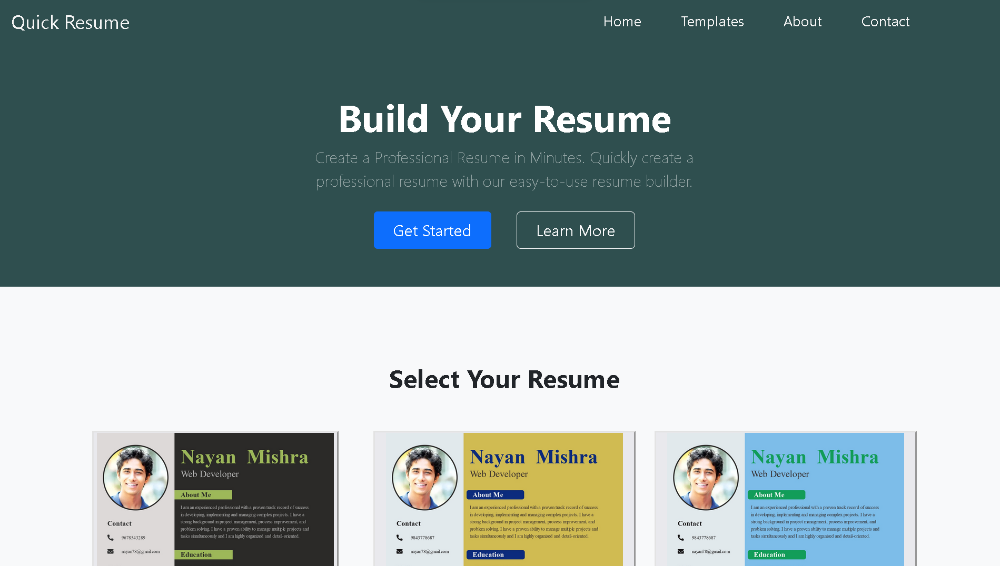

Resume Builder websites are becoming increasingly popular amongst jobseekers. These websites provide an efficient way for users to create and manage their professional resumes on their own. Using PHP, a Resume Builder website can be implemented to allow users to upload their details, including work experience, educational qualifications, and other information, in a structured format. This data can then be used to automatically create a professional, aesthetically pleasing resume.
